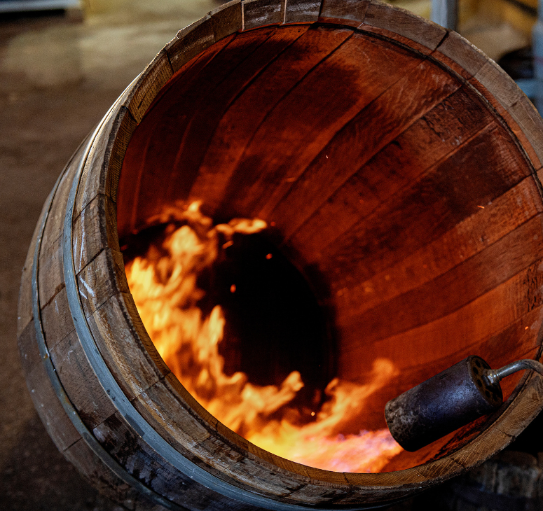
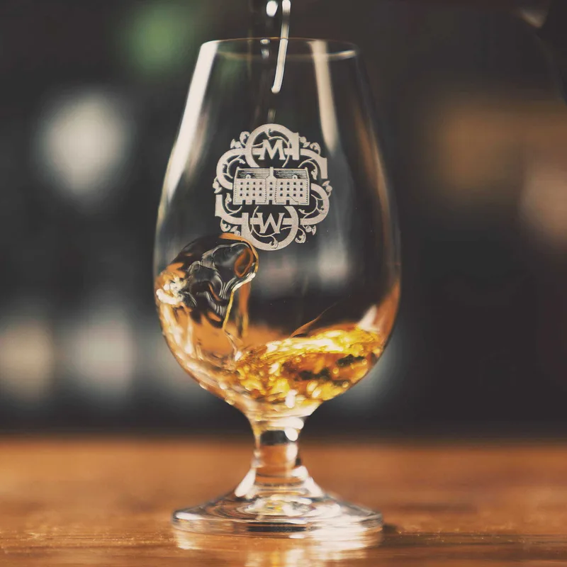
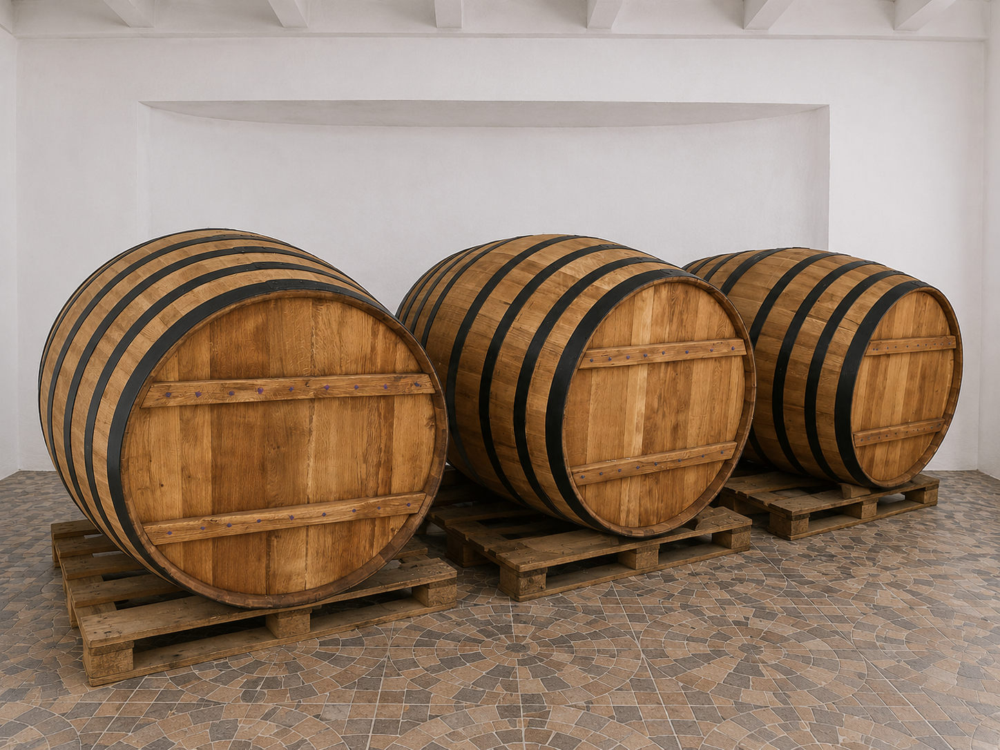
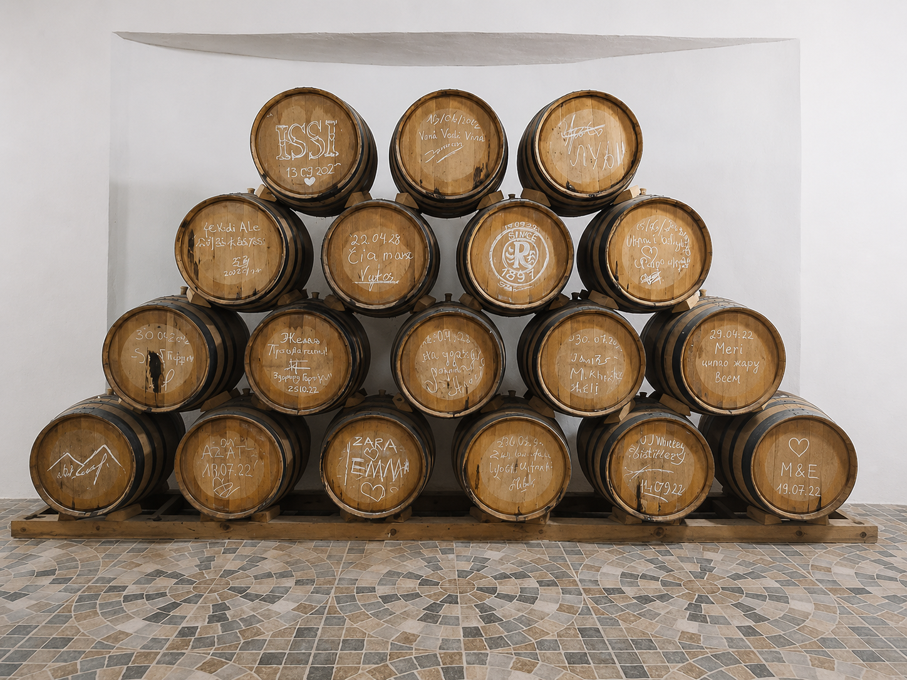
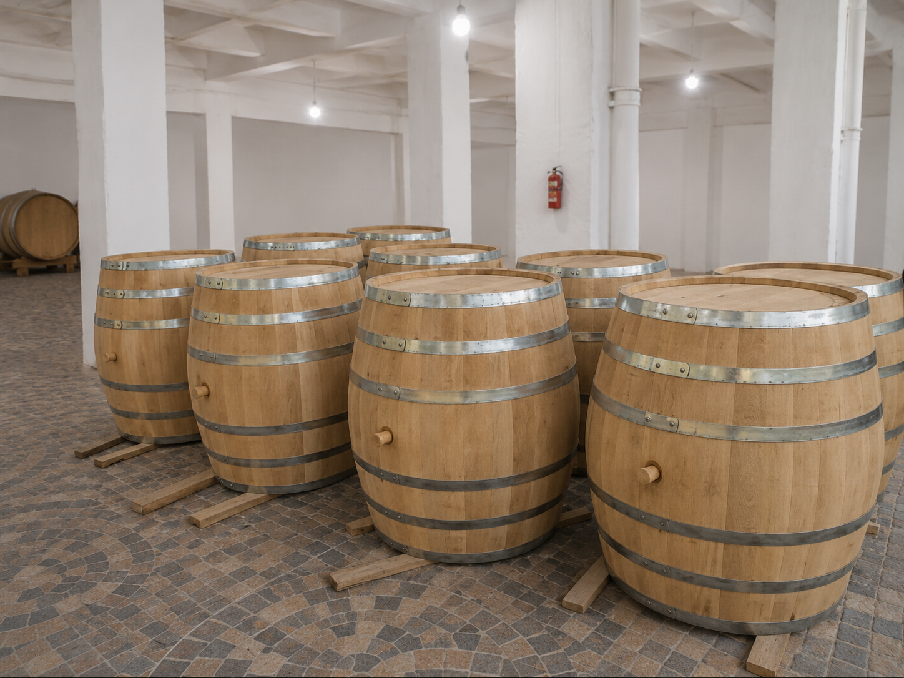
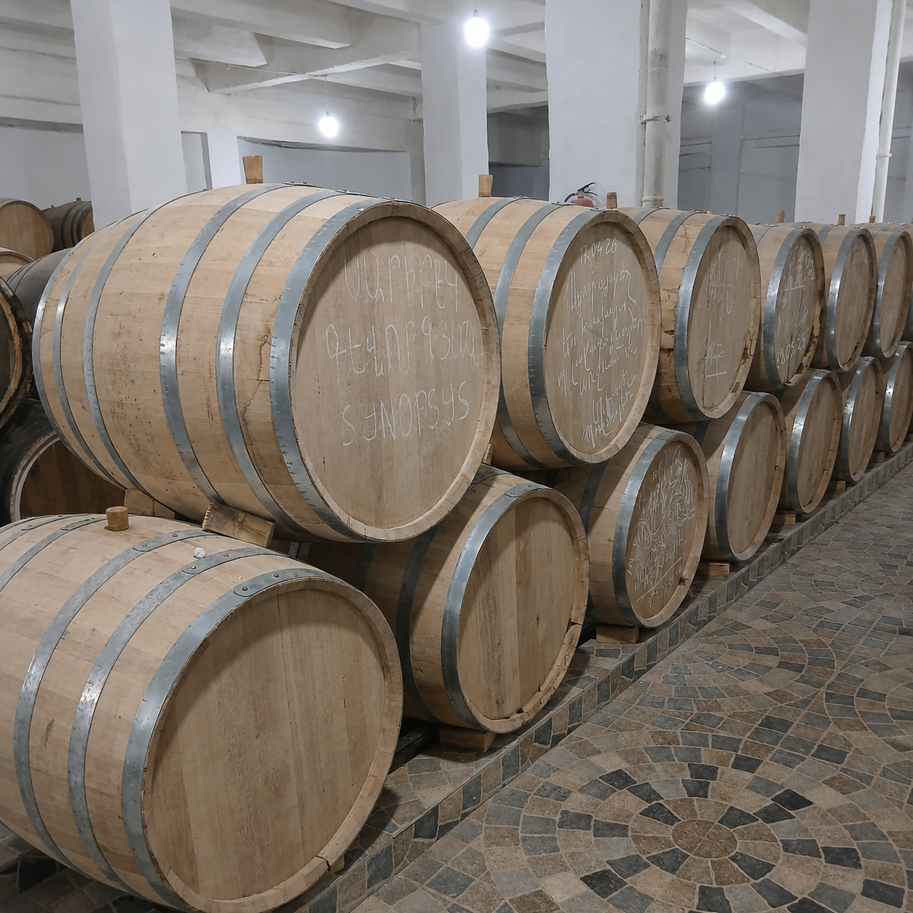

Ձեռագործ աշխատանք
Յուրաքանչյուր տակառ պատրաստվում է անհատական ուշադրությամբ՝ սկսած կաղնու ընտրությունից մինչև վերջնական ստուգում։

Tradition · Craftsmanship · Quality
Premium Armenian Oak Barrels
Հայկական կաղնուց պատրաստված ձեռագործ տակառներ՝ 50 լիտրից մինչև 10 000 լիտր։ Ստեղծված որակի, դիմացկունության և օպտիմալ հնեցման համար։

Մեր պատմությունը
BOCHKA-ի հիմքում ընտանիքի փորձն է, ձեռքի աշխատանքը և հարգանքը հայկական կաղնու նկատմամբ։ Դավիթ Ստեփանյանի համար այս ճանապարհը սկսվել է դեռ 16 տարեկանից, երբ նա հոր հետ սովորում էր փայտի լեզուն, տակառի ձևը և այն ճշգրտությունը, որը պահանջում է իսկական վարպետությունը։
Տարիների ընթացքում փորձը կատարելագործվել է։ Ինչպես լավ հնեցված խմիչքը հասունանում է ժամանակի հետ, այնպես էլ այս արհեստը փոխանցվել է սերնդից սերունդ՝ դառնալով ավելի նուրբ, ավելի վստահ և ավելի որակյալ։
Այսօր BOCHKA-ն ներկայացնում է հայկական տակառագործության նոր փուլը՝ ավանդական գիտելիքը համադրելով ժամանակակից որակի պահանջների, պրեմիում ներկայացման և անհատական պատվերների հետ։

BOCHKA
Յուրաքանչյուր տակառ պատրաստվում է անհատական ուշադրությամբ՝ սկսած կաղնու ընտրությունից մինչև վերջնական ստուգում։
Արտադրում ենք մեծ և միջին չափերի տակառներ՝ մասնավոր, ռեստորանային, հյուրանոցային և արտադրական միջավայրերի համար։
Կառուցվածք, կրակային մշակում և վերահսկվող արտադրություն՝ երկար կյանք, կայունություն և օպտիմալ հնեցում ապահովելու համար։
Հայկական կաղնի
BOCHKA-ի տակառները պատրաստվում են խնամքով ընտրված հայկական կաղնուց։ Արտադրության համար ընտրվում են միայն հասուն ծառեր, որոնց տարիքը սովորաբար առնվազն 70–80 տարի է։
Կտրվելուց հետո կաղնին անցնում է բնական պահեստավորման, չորացման և հասունացման երկար գործընթաց՝ 3–4 տարի։ Այս փուլը նվազեցնում է փայտի ներքին լարումները, բարձրացնում կայունությունը և պատրաստում նյութը երկարաժամկետ օգտագործման համար։
Յուրաքանչյուր տակառի ներսը մշակվում է վերահսկվող կրակային եղանակով։ Այս ավանդական գործընթացը օգնում է կաղնուն բացել իր բնական բույրային հատկությունները և ապահովում է գինու, կոնյակի, վիսկիի ու այլ խմիչքների հավասարակշռված հնեցում։

Մեր չափերը
BOCHKA-ն արտադրում է հայկական կաղնուց ձեռագործ տակառներ՝ 50 լիտրից մինչև 10 000 լիտր։ Յուրաքանչյուր տակառ կառուցվում է պատվերով՝ հաշվի առնելով հաճախորդի նպատակները, միջավայրը և պահման պահանջները։
Մեր տակառները նախատեսված են գինեգործարանների, թորման արտադրությունների, ռեստորանների, հյուրանոցների և մասնավոր պատվիրատուների համար, ովքեր կարևորում են բարձր որակը, երկար ծառայության ժամկետը և օպտիմալ հնեցման պայմանները։
Փոքր և դեկորատիվ 250 լիտրանոց տակառներից մինչև 10 000 լիտրանոց մեծ պահման տակառներ՝ յուրաքանչյուր արտադրանք ստեղծվում է նույն սկզբունքով՝ դիմացկունություն, հստակ կառուցվածք և անզիջում ուշադրություն դետալներին։
Մեր տակառները
Մենք արտադրում ենք տակառներ 50 լիտրից մինչև 10 000 լիտր։ Ստորև ներկայացված են մեր հիմնական աշխատանքային և դեկորատիվ լուծումներից մի քանիսը։

250 լիտրանոց դեկորատիվ տակառներ՝ ռեստորանների, հյուրանոցների, գինետների, ինտերիերի և ներկայացուցչական միջավայրերի համար։ Ստեղծված են այն մարդկանց համար, ովքեր ցանկանում են տարածքին հաղորդել հայկական կաղնու ջերմություն, շքեղություն և ավանդական բնավորություն։

250 լիտրանոց տակառներ՝ պատրաստված հայկական կաղնուց։ Հարմար են այն դեպքերի համար, երբ անհրաժեշտ է համադրել գործնական օգտագործումը, գեղեցիկ տեսքը և բնական փայտի որակը։

8 000 լիտրանոց տակառ՝ նախատեսված պրոֆեսիոնալ արտադրողների համար։ Կառուցված է երկարատև պահման, կայունության և մեծ ծավալի աշխատանքային պահանջների համար։

10 000 լիտրանոց BOCHKA՝ մեր ամենամեծ ստանդարտ լուծումներից մեկը։ Նախատեսված է լայնածավալ պահման և հասունացման համար՝ պահպանելով ուժեղ կառուցվածք, ճշգրիտ հավաքում և բարձր որակ։

6 000 լիտրանոց բաց կառուցվածքով տակառ՝ նախատեսված արտադրական և հատուկ պատվերների համար։ Այն կիրառվում է այնտեղ, որտեղ կարևոր են մեծ ծավալը, հասանելիությունը, բնական կաղնու ազդեցությունը և երկարատև օգտագործումը։
Արտադրություն
BOCHKA-ում յուրաքանչյուր տակառ պատրաստվում է այնպես, որ ծառայի երկար, պահպանի կայունությունը և ապահովի որակյալ հնեցման պայմաններ։
Ընտրվում է առնվազն 70–80 տարեկան հասուն հայկական կաղնի՝ ըստ խտության, կառուցվածքի և ամրության։
Փայտը բնական պայմաններում հասունանում և չորանում է 3–4 տարի՝ կայունություն և երկար կյանք ապահովելու համար։
Յուրաքանչյուր դետալ մշակվում է բարձր ճշգրտությամբ, որպեսզի տակառը լինի ամուր, հավասարակշռված և հուսալի։
Տակառը հավաքվում է վարպետի ձեռքով՝ պահպանելով ավանդական մեթոդները և ժամանակակից որակի պահանջները։
Ներքին մակերեսը մշակվում է վերահսկվող կրակով՝ կաղնու բույրային և պահման հատկությունները բացելու համար։
Մինչև հանձնումը յուրաքանչյուր տակառ անցնում է տեսողական, կառուցվածքային և որակական վերահսկում։
Պատկերասրահ




Կապ / Պատվեր
Անհատական պատվերների, համագործակցության, մեծածավալ տակառների և արտադրական լուծումների համար կապվեք Դավիթ Ստեփանյանի հետ։
David Stepanyan Individual Entrepreneur
David Stepanyan Անհատ ձեռնարկատեր
Tax ID (ՀՎՀՀ): 47714479
Address:
Berkanush, Ararat Province,
Armenia